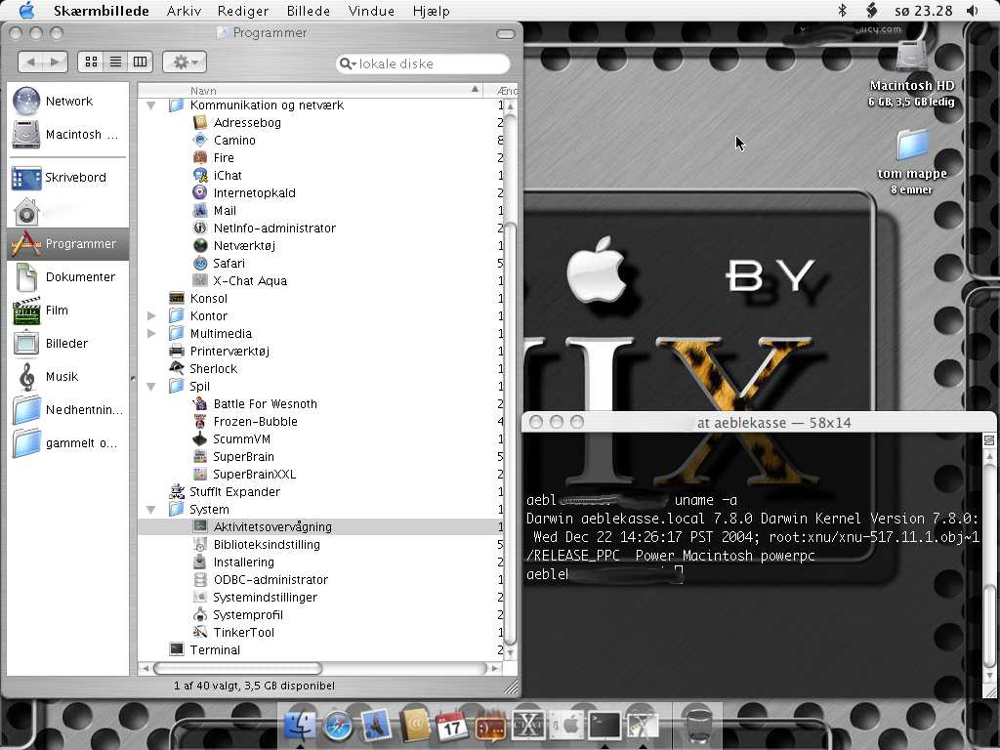
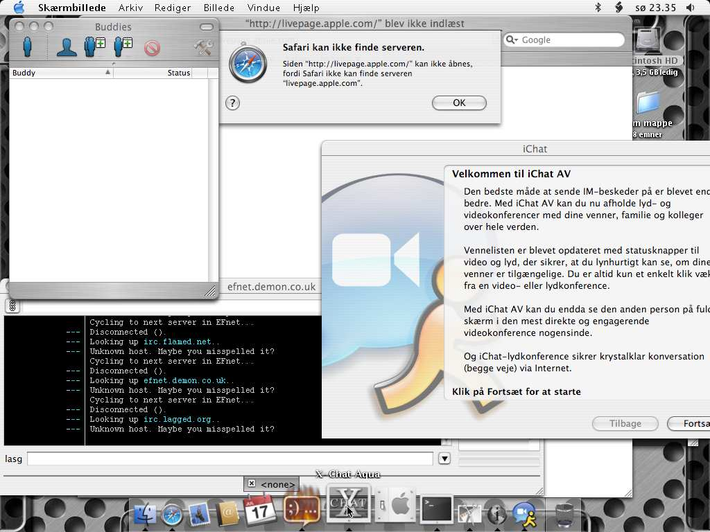
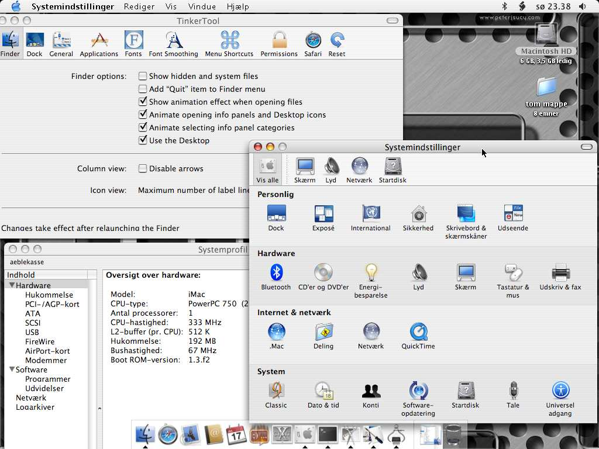

I mange år brugte jeg kun x86-maskiner, og vidste ikke det store om noget andet. Efterhånden som jeg begyndte at interessere mig for operativsystemer og grundlæggende hardware, steg interessen for andre arkitekturer også. Da jeg hørte om "noget Unixbaseret Mac-værk", brugte jeg allerede Linux og BSD dagligt, og var blevet meget glad for unix-like -ting. En god del tid efter, til Linuxforum 2005, var der fremvisning af MacOSX, hvor Apple prøvede at blære sig godt og grundigt. De viste hvordan de grafisk var Linux langt overlegne, men de fortalte blot om "alle de mange almindelige gamle unix-features", uden at fremvise dem. Kort tid senere fandt jeg en brugt iMac i dba.dk. Den købte jeg.
Det tog ikke lang tid at vænne sig til den grafiske brugerflade, hvori det meste er forklaret og skrevet på tydeligt dansk. Der er masser af visuelle effekter, skygger, gennemsigtigheder og en meget smuk pauseskærm. (dog hakkede alting lidt, pga alderen på denne maskine)
Efter få timer, havde jeg testet de ting der fulgte med den defaultinstallation jeg havde fået. Jeg havde ikke fået X med, så jeg vidste jeg ikke lige umiddelbart ville kunne køre X11-programmer. (en kammerat påstår de kører ret defekt alligevel?). Jeg begyndte at savne de programtyper jeg plejer at bruge, og googlede. Jeg fandt hurtigt en xchat-port (x-chat aqua), til IRC, og en multi-IM-klient (fire) til MSN, ICQ og Jabber. Det virkede udemærket. Efter denne smule søgning, var jeg blevet træt af den medfølgende browser (Safari) (Hvordan laver man tabs i den??), og fandt derfor en firefox-port (Camino), som virker ganske udemærket. Der var noget medfølgende IM-værk (iChat), men det krævede en del opsætning og kontakt til en server der ikke fantes, så det droppede jeg hurtigt.
Jeg har altid tænkt på Mac'er som grafikmonstre, så jeg gættede på der måtte være noget slibrigt billedbehandlingsprogram med. Det er der ikke. Der er en billedfremviser, som ikke kan så meget, hvis man er vant til gqview i linux/bsd og en "skærmbillede"-tager, som virkede godt nok til at tage et par billeder til denne artikel.
Hvis man ikke har X med, er der ikke noget enormt spil-udvalg. Jeg søgte, og fandt et par stykker, heriblandt Battle of Wesnoth (som jeg spiller på bsd'en). Det virker ganske fint. Hvad findes der af windows-emulatorer til mac? Hvis man nu vil spille de store moderne windowsspil. Jeg ved det ikke, men umiddelbart forestiller jeg mig et emulatorbøvl med en X med en wine.
Min maskine har ikke noget dvd-drev, men jeg testede et par lyd-cd'er og et par mp3-filer. Den medfølgende medieafspiller er lige så elendig som billedfremviseren. Man kan ikke lave en playlist! Det er meget muligt deres iEtEllerAndet til det virker bedre, men den krævede noget online tilmelding jeg ikke ville. (Da ikke tilmelding bare for at afspille musik?!)
Jeg prøvede med forskelligt eksternt udstyr, og det var noget der både fungerede og var brugbart. Både min mp3-afspiller, eksterne harddisk og usb-bluetooth-adaptor kunne den fint arbejde med, uden nogen driverinstallationer og andet (som windows kræver).
AppleScript er nogle smarte scriptingmuligheder, der minder en smule som shellscripts. Dog kan de f.eks. kædes sammen med en mappe, således et script udføres når en fil trækkes til mappen (ja, man kopierer/flytter med træk&slip). Jeg prøvede at skrive lidt hello-world og en velkomsthilsen, men sidstnævnte nægtede den at udføre. Det er sikkert meget smart, hvis man bruger det til daglig, men hvorfor opfinde et helt nyt sprog til det?
Terminalen, der giver een adgang til et tekstinterface og de gængse unixprogrammer, brugte jeg meget tid med. VI (som er VIM, der er ingen VI), lavede kludder i al tekst, når man havde rykket lidt rundt på markøren. Jeg har set det før, når jeg har brugt VI på et fjernsystem, men der har jeg altid fundet en eller anden smart løsning. Her kunne jeg ikke få den til at gøre som jeg ville, så jeg vendte mig til at bruge TextEdit i stedet for VI(M!). Jeg forsøgte at få overblik over strukturen i systemet, og regnede først med det ville ligne en pæn unix. Men nej! Under den smukke grafiske overflade, ser MacOSX _meget_ anderledes ud. Der er mange gængse unix-mapper der går igen flere steder, blandet med MacOS-mapper, forskellige måder at opstille mappenavne (store og små bogstaver, forkortede og uforkortede navne) i eet stort rod. Da jeg var ny i unix, blev jeg meget glad for "man hier", som vel også måtte findes her. Det gør den da også. I en udgave fra noget ukendt BSD fra 1993, som absolut intet ved om MacOSX's ting og sager. Jeg havde også en del problemer med at blive root, men fandt ud af at man kunne "slå administrator til" et sted i den grafiske opsætning. Her skulle man så angive en valgfri kode, og herefter virkede den også i terminalen.
Jeg synes MacOSX er langt smartere end Windows på flere områder, men dog ikke særlig anvendeligt system til mine nuværende behov. Der er sikkert masser af gamle Mac-brugere og Windows-brugere, der vil finde MacOSX glimrende, og kunne bruge det til daglig. Jeg er måske også en dum tester, der ikke gider købe ekstraprogrammer fra Apple (Hver gang man pakker en fil ud, får man tilbudt en "StuffIt Expander Pro", som åbenbart skulle kunne pakke bedre ud end den "StuffIt Expander" der følger med. Hver gang man afspiller en musikfil, får man tilbudt at købe QuickTimePro.)
Jeg havde hørt så meget om hvor unix-agtigt MacOSX skulle være, og på det punkt blev jeg noget skuffet. Hvis man ser på det med unix-øjne, ligner det et lidt for hurtigt hack. Det er muligt at køre diverse andre systemer på en Mac, bl.a. Linux og BSD. Jeg har lyst til at forsøge med en NetBSD, og se om jeg kan få skabt et ordentligt arbejdsmiljø med det. Min erfaring siger mig det er en hel del mere funktionelt og enkelt end MacOSX, og så er der en prisforskel på godt 1200kr.
De bedste ting i MacOSX: Den grafiske brugerflade er eyecandy af 1.klasse, og har en del smarte finesser. Eksternt udstyr ser umiddelbart ud til "bare" at fungere. Pauseskærmen Flurry
De kedelige ting i MacOSX: Der er kun lidt Unix-ånd og kun meget lidt Unix-følelse i terminalen. Ringe udvalg af defaultprogrammer (af et system på linje med windows at være). Programmer der reklamerer med "Køb mig i dag" ved opstart. Håber det ændrer sig.
Denne tekst er skrevet i "TextEdit 1.3" og billederne er lavet med "Skærmbillede" (som kun kan gemme i tiff-format) Teksten er senere rettet til og gjort til html på en bsd.
Her er et par billeder af min MacOSX

Jeg har smidt nogle frie programmer ind under Kommunikation&Netværk og Spil. uname kendte den da heldigvis til.

En dag jeg ville kode lidt, opdagede jeg at den hverken kendte gcc, cc eller nasm. Den grafiske brugerflade tillader man sætter farver på baggrunden på navnelabels på filer og mapper, og baggrundsfarver og billeder i mapper. Jeg havde sat forskellig farve på både labels og mappebaggrundene på de mapper jeg brugte mest.

X-chat aqua og Fire virker helt fint, men iChat skulle man igennem en længere tilmelding til, og Safari brokker sig virkelig meget, hvis den ikke har forbindelse.

Systemindstillinger laver man grafisk (hvor er der et værktøj til harddiskpartitionering??) Programmet TinkerTool er et gratis program, der giver adgang til en del flere indstillinger end Systemindstillinger gør.